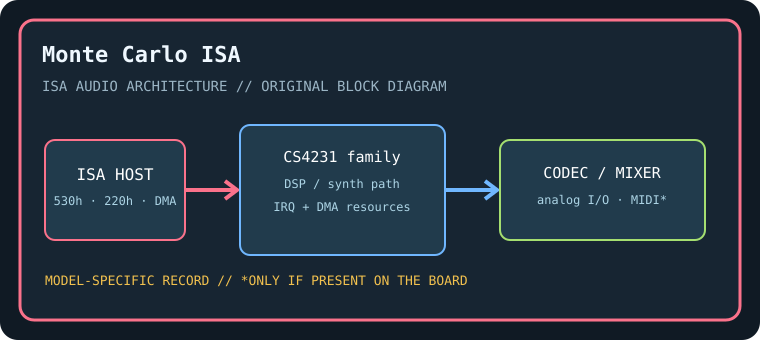

[ INDIVIDUAL COMPONENT // SOUND HARDWARE ]
Turtle Beach Monte Carlo (ISA)
This record covers the Turtle Beach Monte Carlo ISA multimedia card family. Confirm the card’s model/revision and codec markings; it is not the WaveFront-only Maui or Tropez board.

Model-specific specifications
| Catalog identity / chipset / DSP | Turtle Beach Monte Carlo (ISA). Crystal Semiconductor CS4231-family audio logic and board-level Sound Blaster compatibility circuitry; exact DSP revision depends on Monte Carlo production revision. |
|---|---|
| Audio codec / conversion | CS4231-compatible 16-bit codec for PCM and WSS mode; analog section and optional CD connectors vary with board revision. |
| Bus / I/O / ports | 16-bit ISA. WSS codec base commonly 530h, Sound Blaster emulation base commonly 220h, and OPL/MIDI legacy ranges such as 388h/330h when enabled. Set using Turtle Beach configuration software. |
| IRQ | WSS/SB emulation IRQ chosen by setup utility, often 5, 7, or 10; verify no duplicate IRQ assignment across both modes. |
| DMA | Codec supports selected 8/16-bit ISA DMA channels; typical low/high assignments are 1 and 5, but board/driver configuration controls actual channels. |
| Driver / operating system | Turtle Beach DOS configuration and Windows 3.x/95 drivers; WSS and Sound Blaster emulation require matched software/resource settings. Avoid assuming the original driver works on modern operating systems. |
| Motherboard compatibility | ISA-capable motherboard with working DMA controller and available I/O/IRQ resources; test WSS and SB-emulation paths separately. BIOS timing and ISA bridges may impair older games. |
| Sound standards / interfaces | Windows Sound System-compatible 16-bit PCM, Sound Blaster-compatible legacy DOS audio through emulation, AdLib/OPL FM, and MPU-401-compatible MIDI where enabled. |
| Connectors / power | ISA slot power; use only the analog, MIDI, CD-audio, and auxiliary connectors physically present on this exact board. Inspect the edge bracket, keyed headers, PCB revision, and manual before connecting. |
Compatibility & preservation notes
This record covers the Turtle Beach Monte Carlo ISA multimedia card family. Confirm the card’s model/revision and codec markings; it is not the WaveFront-only Maui or Tropez board. The precise DSP/codec package, firmware, resource assignment, and OS driver release must be matched to the physical SKU. Record the actual base port, IRQ, DMA channels, driver version, motherboard chipset, and BIOS configuration used in a working test rather than copying family defaults.
- Photograph the complete model number, PCB revision, major IC markings, jumpers, connectors, and any daughterboard before service.
- Check DMA and IRQ reservations against storage, serial/parallel, and other ISA devices; test PCM, synthesis, and MIDI functions independently.
- Power down and unplug the host before fitting/removing ISA hardware. Keep the exact manual and original setup/driver media with the specimen.
Manufacturer manuals & archival sources
- Internet Archive — Turtle Beach Monte Carlo ISA manualArchive catalog search for original manufacturer-authored manual/setup documentation for this model; confirm the full SKU and revision in any scan.
- Internet Archive — Turtle Beach Monte Carlo DOS and Windows driver diskArchive catalog search for preserved manufacturer driver, utility, or bundled software media for this specific board.
- Internet Archive — Turtle Beach Monte Carlo ISA sound card documentation archiveAdditional model-specific catalog records and manuals; use the physical board marking to exclude adjacent revisions and related products.
Archive search links are discovery records rather than claims that one particular scan is an original; verify provenance, revision and completeness before relying on a scanned setup guide.